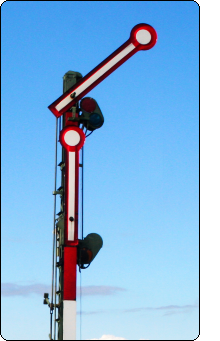
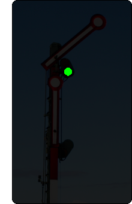
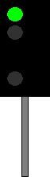

(1) Bedeutung
Fahrt.
Signalbuch-Online
Fahrt.
Tageszeichen:
Ein Signalflügel – bei zweiflügligen Signalen der obere Flügel – zeigt schräg nach rechts aufwärts.
Nachtzeichen:
Ein grünes Licht.


Ein grünes Licht.

Das Signal erlaubt die Fahrt mit der im Fahrplan zugelassenen Geschwindigkeit, sofern sie nicht durch andere Signale oder besondere Anordnungen eingeschränkt ist.
Zum Öffnen der Galerie bitte Bild anklicken!